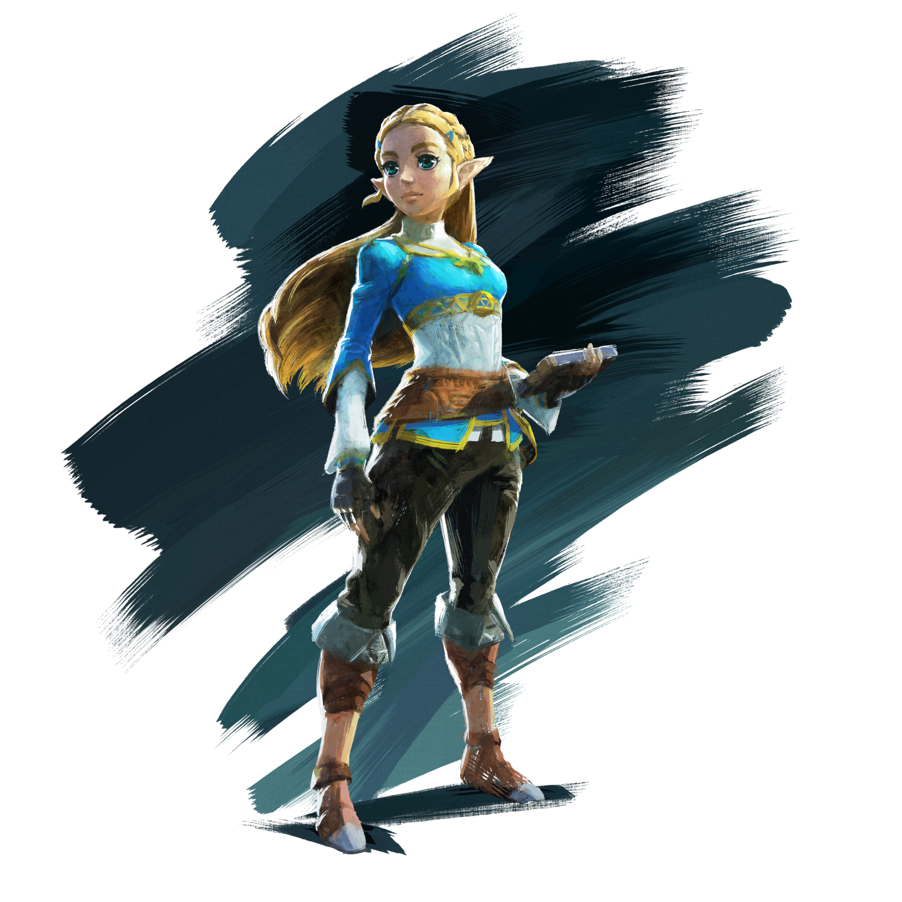
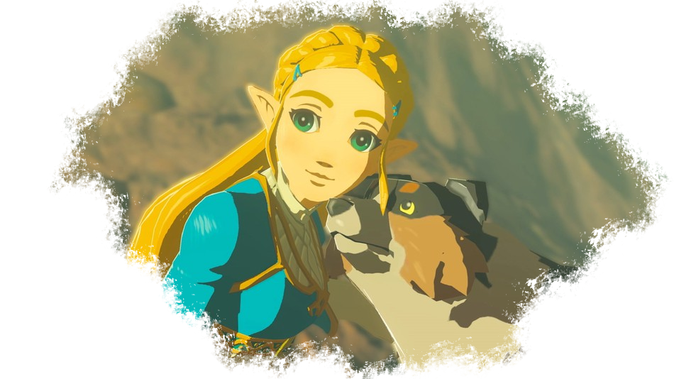

Zelda

Zelda est la fille de Rhoam bosphoramus Hyrule, roi du royaume d'Hyrule. En elle coule le sang de la déesse Hylia, et tout le monde attend d'elle qu'elle soit capable d'utiliser les pouvoirs de la déesse pour combattre et terrasser Ganon si celui-ci décidait d'attaquer la région.
Zelda est une fille curieuse, intelligente et très portée sur l'archéologie, les recherches et les sciences. Aussi, lorsque les archéologues sheikas ont découvert les gardiens et les créatures divines des millénaires passés qui avaient contribué à la défaite du fléau, la princesse a décidé de se concentrer sur cet avantage capital.
En tant que descendante de la déesse, elle est la réincarnation de la princesse des légendes qui use de sa magie pour combattre le mal. Elle est la première partie du duo mythique. Link en est la deuxième. Quand le roi à décidé de faire de Link son chevalier servant, il est évident que la princesse ne l'aime pas beaucoup.Le jeune homme est talentueux, sûr de lui, et est le porteur de la lame purificatrice. "Tout en lui lui rappelle qu'elle n'est pas à la hauteur".
Bien que la princesse consacre toute son énergie à sa cause, elle n'arrive pas à développer ses pouvoirs. Elle ne ressent rien, n'arrive à rien malgré ses efforts, et désespère. Elle se compare à Link qui avance toujours plus vers sa destinée et qui ne semble pas connaître l'échec et se sent rabaissée et jalouse. Le fait que celui-ci la suive partout pour la protéger la confronte plus encore à ses propres échecs, et renforce son ressentiment envers le chevalier.
Les sentiments de la jeune fille envers son chevalier servant ont commencé à évoluer lorsque celui-ci l'a sauvée d'une attaque orchestrée par des Yigas (des sheikas renégats ouvertement et violemment opposés à la couronne).
Suite à cet évènement, Zelda à commencé à apprécier Link de plus en plus, au point de se confier à lui et même d'en tomber amoureuse. Lorsque Ganon a ressurgi, prêt à prendre sa revanche, la princesse, tout comme ses prodiges, n'était pas prête et ses pouvoirs n'étaient toujours pas éveillés. Elle a compris comment les utiliser dans une situation de crise: pour protéger son preux chevalier, à bout de force faisant barrage de son corps pour la protéger. Malheureusement, Link est mort dans ses bras. Zelda se retrouva donc seule pour faire face à un fléau surpuissant.
Avec ses nouveaux pouvoirs, elle parvint à enfermer le démon à l'intérieur de l'enceinte du château et s'est promis de le retenir jusqu'au réveil du héros à la lame purificatrice. Depuis lors, elle lutte contre Ganon.
Elle lutte. Seule depuis un siècle, sans faiblir.
